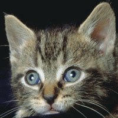
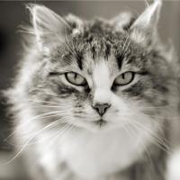
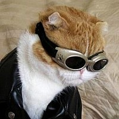

Я хочу вам рассказать про своего котика. Он просто чудо! Мой кот породистый: персидский кремово-огненный экстремал. Его зовут Султан. Мы получили его в подарок от знакомых моего папы (за что я им очень благодарна). 
Султан - мой самый лучший друг: я могу доверить ему все свои секреты и тайны, зная, что мой друг их никому не разболтает. Я считаю, что выражение «Собака - друг человека» нужно дополнить словами: «Кот тоже лучший друг человека». 
Султан живет у нас уже три года. За это время он сумел растопить сердце моей мамы, которая всегда говорила: «Котам в квартире не место». Только замечательному характеру и симпатичной внешности нашего Султана это оказалось под силу. У него огромные янтарные глаза, маленький симпатичный носик и пышные усы. 